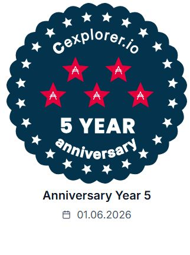

ネットワーク運営
Cardanoネットワークの分散化に参加し、長期的な運営を続けます。
AID1 Stake Pool
AID1は2021年6月1日からCardano Stake Poolを運営しています。 ブロック生成を通じてネットワークを支えながら、 情報発信、コミュニティ活動、ガバナンスにも積極的に参加しています。

Pool overview
ブロックチェーンの公開データから自動更新します。取得中…
0e7a4cec5fb6f0e9eab8ad29b31e066f44b03cdc616ed37c2fb62061
Why delegate
Cardanoネットワークの分散化に参加し、長期的な運営を続けます。
YouTubeやXを通じて、Cardanoの動きや学んだ内容を共有します。
イベントや交流を通じて、日本でCardanoを知る機会を増やします。
Cardanoガバナンスに参加し、制度や提案を分かりやすく伝えます。
Verify independently
AID1のブロック生成実績や委任状況は、Cardanoのエクスプローラーで確認できます。
Delegate to AID1
対応ウォレットのStake Pool検索で、Ticker「AID1」を検索してください。 ご不明な点がございましたら、CONTACTボタンからお気軽にご連絡ください。できるだけ早くご回答いたします。